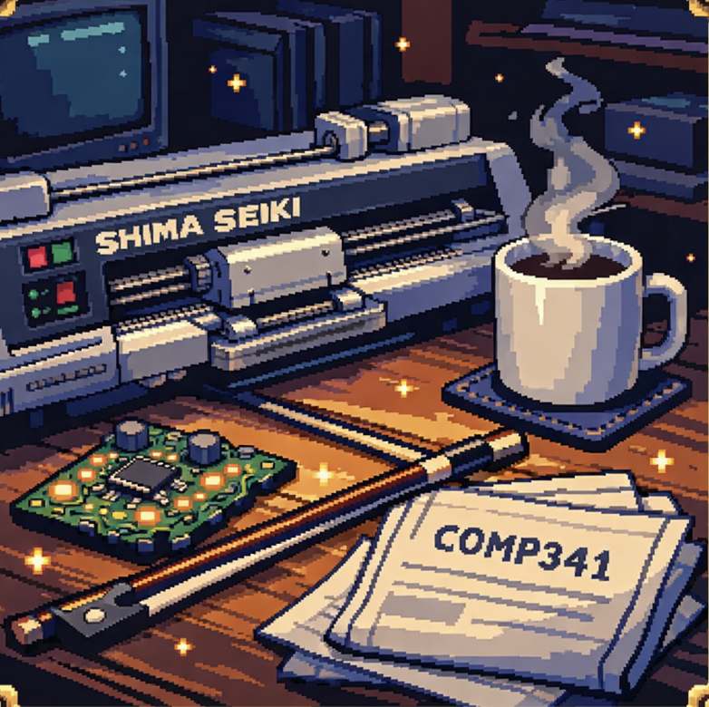

Marouan El-Asery
Computational Textiles & Soft Systems
I build machine-knit sensing + thermal interfaces and the pipelines that make them reproducible, from pattern generation to embedded control and validation.
For Recruiters
Computational textiles / soft systems engineer. I build end-to-end prototypes: machine knitting + embedded control + data tooling.
For Researchers
I study how textile structure and material routing produce reliable sensing and thermal behavior, with a focus on reproducible fabrication and experimental validation.
Read Research Statement →
Machine Knitting
Embedded/Control
Python
C/C++
CUDA
Parallel Computing
Knitout
Computational Fabrication
JavaScript
Computer Architecture
Soft Robotics
FEM/Simulation
Physics-Based Simulation
Bayesian Optimization
PID Control
Linux
PyTorch
Biofabrication